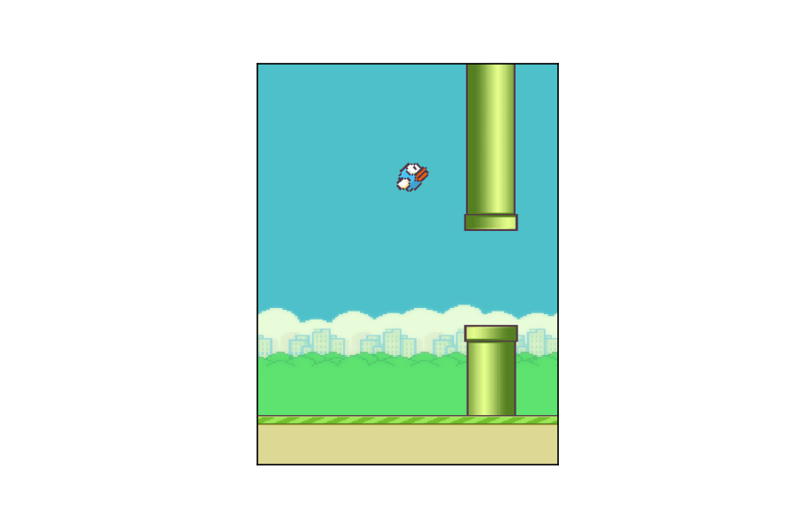
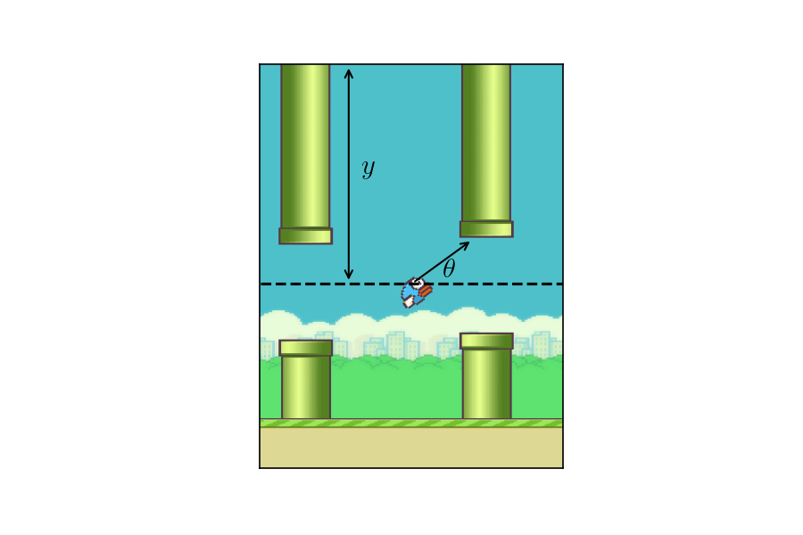
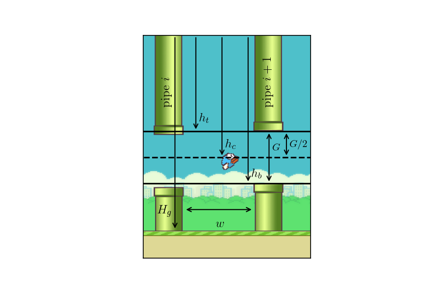

FlapJax Part 1 - Making a Flappy Bird game with PyGame
The flappy bird game is quite simple. Each step, the user can take one of two options: do nothing or flap. There are pipes that slide by which have a gap which the player is supposed to go through. If the player hits a pipe, then game is over. In the original game, if the player hits the ground, the game is over as well. Additionally, the original game allows for the bird to go arbitrarily high of the top of the screen. We will deviate from these last two. We will clip the player to always be on the screen and allow the player to touch the ground.
To implement the game, we will use pygame. However, much of the dynamics will
be handled ourselves with basic Python code. We will write a couple classes to
handle the bird and the pipes as well as a gym-compatible class for running
the game. We will be implementing the full game. The final product will look
like the following:

We will grab the game images from this repo. Other than the images, we will use nothing else from that repo. We will be mimicking this version of the game.
We will be using a modular layout for our code structure. The layout will look like:
.
├── flappy_bird
│ ├── core
│ │ ├── bird.py
│ │ ├── config.py
│ │ ├── flappy_game.py
│ │ ├── flappy.py
│ │ ├── __init__.py
│ │ ├── pipe.py
│ │ ├── render.py
│ │ ├── resources
│ │ │ ├── background-base.png
│ │ │ ├── background-day.png
│ │ │ ├── background-night.png
│ │ │ ├── bluebird-downflap.png
│ │ │ ├── bluebird-midflap.png
│ │ │ ├── bluebird-upflap.png
│ │ │ ├── pipe-green.png
│ │ │ ├── pipe-red.png
│ │ │ ├── redbird-downflap.png
│ │ │ ├── redbird-midflap.png
│ │ │ └── redbird-upflap.png
│ │ ├── resources.py
│ │ └── types.py
│ ├── envs
│ │ ├── __init__.py
│ │ └── v1.py
│ ├── __init__.py
├── MANIFEST.in
├── setup.cfg
└── setup.py
Defining types core.types.py
In this file, we simply define some useful types.
import numpy as np
import pygame
PyGameImage = pygame.surface.Surface
PyGameRect = pygame.rect.Rect
PyGameSurface = pygame.surface.Surface
RngGenerator = np.random.Generator
Loading the resources core.resources.py
Our first job will be to load the images of the game.
import pathlib
import pygame
__all__ = ["background_images", "pipe_images", "bird_images"]
resources_dir = pathlib.Path(__file__).parent.absolute().joinpath("resources")
# Function to make loading a bit less verbose
def _load_image(name: str):
return pygame.image.load(resources_dir.joinpath(name).as_posix())
background_images = {
"day": _load_image("background-day.png"),
"night": _load_image("background-night.png"),
"base": _load_image("background-base.png"),
}
pipe_images = {
"red": _load_image("pipe-red.png"),
"green": _load_image("pipe-green.png"),
}
bird_images = {
"blue": {
"upflap": _load_image("bluebird-upflap.png"),
"midflap": _load_image("bluebird-midflap.png"),
"downflap": _load_image("bluebird-downflap.png"),
},
"red": {
"upflap": _load_image("redbird-upflap.png"),
"midflap": _load_image("redbird-midflap.png"),
"downflap": _load_image("redbird-downflap.png"),
},
}
The images we grabbed are a bit narrow and not quite the shape we want. With some experimentation, we can determine the scalings to make the images look a bit better. I chose to scale the widths by 5/3. At the end of the day, I ended up with the following.
for key, image in background_images.items():
w = image.get_rect().width * 5.0 / 3.0
h = image.get_rect().height * (0.714 if key == "base" else 1.25)
background_images[key] = pygame.transform.scale(image, (w, h))
for key, image in pipe_images.items():
w = image.get_rect().width * 5.0 / 3.0
h = image.get_rect().height * 1.094
pipe_images[key] = pygame.transform.scale(image, (w, h))
for color in bird_images.keys():
for flap, image in bird_images[color].items():
w = image.get_rect().width * 5.0 / 3.0
h = image.get_rect().height * 5.0 / 3.0
bird_images[color][flap] = pygame.transform.scale(image, (w, h))
Game configurations core.config.py
Next, we will have a class that specifies the configuration of the game.
import json
from typing import Optional, Tuple
import attrs
from attrs import field, validators
def gt_or_none(value):
def f(*args):
val = args[-1]
assert val is None or val > value, f"Value must be None or >= {value}"
return f
@attrs.define
class FlappyBirdConfig:
"""
Configuration for the FlappyBird game.
Attributes
----------
bird_color: str
Color of the bird. Can be 'blue' or 'red'.
bird_jump_velocity: float
Velocity of the bird after flap.
bird_jump_frequency: int
Number of steps before bird can falp again.
bird_start_position: Tuple[int, int]
Starting position of the bird.
bird_dead_on_hit_ground: bool
If True, game is over when bird hits the ground.
bird_max_speed: Optional[float]
If not None, the bird's speed cannot exceed `bird_max_speed`.
bird_rotate: bool
If True, the bird will rotate as it moves.
pipe_color: str
Color of the pipes. Can be 'green' or 'red'.
pipe_speed: float
Speed of the pipes.
pipe_gap_size: int
Size of gap between pipes.
pipe_spacing: int
Space between pipes.
background: str
Type of background. Can be 'day' or 'night'.
hide_screen: bool
If True, the screen will not be displayed.
show_score: bool
If True, the score will be displayed.
show_game_over_screen: bool
If True, the game-over screen will be displayed.
gravity: float
Gravitational acceleration.
dt: float
Time between frames.
fps: int
Frames per second of the game.
"""
bird_color: str = field(default="blue", validator=validators.in_(["blue", "red"]))
bird_jump_velocity: float = field(default=4.0, validator=validators.gt(0.0))
bird_jump_frequency: int = field(default=7, validator=validators.ge(0))
bird_start_position: Tuple[int, int] = field(default=(100, 250))
bird_dead_on_hit_ground: bool = field(default=True)
bird_constrained_to_screen: bool = field(default=True)
bird_max_speed: Optional[float] = field(default=None, validator=gt_or_none(0.0))
bird_rotate: bool = field(default=True)
pipe_color: str = field(default="green", validator=validators.in_(["red", "green"]))
pipe_speed: float = field(default=3, validator=validators.gt(0))
pipe_gap_size: int = field(default=150, validator=validators.gt(0))
pipe_spacing: int = field(default=200, validator=validators.gt(0))
background: str = field(default="day", validator=validators.in_(["day", "night"]))
hide_screen: bool = field(default=False)
show_score: bool = field(default=True)
show_game_over_screen: bool = field(default=True)
gravity: float = field(default=2.0 / 5.0, validator=validators.gt(0.0))
dt: float = field(default=1.0, validator=validators.gt(0.0))
fps: Optional[int] = field(default=60, validator=gt_or_none(0))
Making the bird core.bird.py
Possibly the most important logic of the game is the bird. We will use Newton’s 2nd law and Euler steps to model the dynamics of our bird. We assume that there is a constant gravitational force. In addition, we will fix the horizontal position of the bird. All motion will be in the vertical direction.

In this case, the acceleration of the bird will be constant and equal to the gravitational acceleration. The differential equations for the y-components of position and velocity are simply:
$$ \begin{align} \dv{y}{t} &= v_{y}, & \dv{v_{y}}{t} &= -g \end{align} $$
We will update the position and velocity using an Euler step:
$$ \begin{align} y_{t+1} &= y_{t} + v_{y}\Delta t, & v_{y,t+1} &= v_{y,t} - g \Delta t \end{align} $$
For simplicity, we will set $\Delta t = 1$ and tune the other parameters to give a natural feel to the motion. We need to know how to handle the bird’s flap. Technically, we should use an impulse. In the case of a $\delta$-function impulse, we would get a constant shift in the velocity. Instead of doing this, we will simply change the velocity to some fixed value after a flap (we could think about this as a $\delta$-function impulse with a strength equal to the current velocity plus a constant off-set.) Explicitly, after a flap, we will change the velocity to a fixed value $\bar{v}$
$$ \begin{align} v_{y,t+1} = \begin{cases} v_{y,t} - g, & \text{no flap}\\ \bar{v}, & \mathrm{flap} \end{cases} \end{align} $$
In addition to linear motion, we will also allow for rotation. We will assume a constant angular velocity $\omega$. Then the angular equation of motion and its update is:
$$ \begin{align} \dv{\theta}{t} &= \omega, & \theta_{t+1} &= \theta_{t} + \omega\Delta t \end{align} $$
When the bird flaps, we will instantaniously change the angle to 45 degrees.
To give our bird a flapping animation, after the bird flaps, we will switch between the
upflap and downflap images. For reference, the bird images are as follows:
mid-flap
down-flap
up-flap
Without further delay, let’s write down our bird class:
from typing import Optional
import numpy as np
import pygame
from .config import FlappyBirdConfig
from .resources import bird_images
from .types import PyGameImage, PyGameRect, PyGameSurface
class Bird:
def __init__(self, x0, y0, window_height, config: FlappyBirdConfig):
# Config
self.jump_velocity = config.bird_jump_velocity
self.jump_frequency = config.bird_jump_frequency
self.gravity = config.gravity
# Angular velocity. Set such that it will look like its flappy until it
# reaches its max height.
self.omega = 45.0 * self.gravity / (2 * self.jump_velocity)
self.images = bird_images[config.bird_color]
self.image: PyGameImage = self.images["midflap"]
self.dt = config.dt
self.x0 = x0
self.y0 = y0
self.window_height = window_height
self.rotate = config.bird_rotate
self.max_speed: Optional[float] = config.bird_max_speed
# Number of flaps it takes to reach max height after a flap
self.num_flaps = int(np.ceil(self.jump_velocity / (self.gravity * self.dt)))
# State
self.x = x0
self.y = y0
self.velocity_y = 0.0
self.angle = 0.0
self.jump_counter = 0 # Counter to limit jumps (flaps)
self.flap_counter = 0 # Counter for determinings which image to display
self.flap_type: str = "midflap"
self.reset()
@property
def left(self) -> int:
# left side of image
return int(self.x - self.image.get_width() / 2.0)
@property
def right(self) -> int:
# right side of image
return int(self.x + self.image.get_width() / 2.0)
@property
def top(self) -> int:
# top side of image
return int(self.y - self.image.get_height() / 2.0)
@property
def bottom(self) -> int:
# bottom side of image
return int(self.y + self.image.get_height() / 2.0)
def reset(self):
# Reset to initial state
self.x = self.x0
self.y = self.y0
self.velocity_y = 0.0
self.dead = False
self.angle = 0.0
self.jump_counter = 0
def flap(self):
# If jump_counter == 0, we can flap!
if self.jump_counter == 0:
self.velocity_y = -self.jump_velocity
self.jump_velocity = self.jump_frequency
self.angle = 45.0
self.flap_type = "upflap"
self.image = self.images[self.flap_type]
self.flap_counter = self.num_flaps
self.jump_counter = self.jump_frequency
def step(self, action: int):
# Set the image based on flap_counter
if self.flap_counter > 0:
# If flap_counter > 0, we are flapping. Osscilate between upflap and
# downflap.
self.flap_counter -= 1
if self.flap_type == "upflap":
self.flap_type = "downflap"
elif self.flap_type == "downflap":
self.flap_type = "upflap"
self.image = self.images[self.flap_type]
else:
self.flap_type = "midflap"
self.image = self.images["midflap"]
# Update jump_counter
if self.jump_counter > 0:
self.jump_counter -= 1
if action == 1:
self.flap()
# Apply Euler steps
self.angle = np.clip(self.angle - self.omega * self.dt, -90.0, 45.0)
self.y += self.velocity_y * self.dt
self.velocity_y += self.gravity * self.dt
# Limit speed if requested
if self.max_speed is not None:
maxv = abs(self.max_speed)
self.velocity_y = np.clip(self.velocity_y, -maxv, maxv)
# Limit bird position to be on screen. If we hit the boundaries, set
# velocity to zero.
ymax = self.window_height - self.image.get_height() / 2.0
if self.y > ymax:
self.velocity_y = 0.0
self.y = ymax
if self.y < 0.0:
self.y = 0.0
self.velocity_y = 0.0
@property
def rect(self) -> PyGameRect:
# Get the pygame rect (used for collision detection)
rect = self.image.get_rect()
rect.left = self.left
rect.top = self.top
return rect
def draw(self, surface: PyGameSurface) -> None:
# Draw the bird to the surface
image = self.image
rect = self.rect
if self.rotate:
image = pygame.transform.rotate(image, self.angle)
surface.blit(image, rect)
Making the pipes core.pipes.py
Our next goal is to implement the pipes. The pipe dynamics are very simple compared to the bird dynamics. The pipes will simply move to the left. However, there are a few things we need to consider. First, we want the location of the gap (where the bird can fly through) to be random. Second, our images of the pipes have a finite height, and we want the pipes to fit on the screen.
Let $h$ be the total height one segement of the pipe (upper or lower pipe). Let $H$ be the height from the top of the screen to the ground. Lastly, let $G$ be the height of the gap between the upper and lower pipe. Here is an annotated image with these measurements (aside from $h$ since part of the pipe is hidden.)

We might be tempted to choose the center between the upper can lower pipes to be a random number between $0$ and $H$. However, since $h < H_{g}$, this could cause part of either the upper or lower pipe to be off the screen. To ensure the pipes are completely on the screen, the center must be between:
$$ h_{\mathrm{min}} = H - h - G/2 < h_{c} < h + G / 2 = h_{\mathrm{max}} $$
Now that we know the limits, we can choose a random number between $h_{\mathrm{min}} < h_{c} < h_{\mathrm{max}}$ for the location of the center. Once we know the center, we then set the location of the bottom of the top pipe $h_{t} = h_{c} - G/2$ and the location of the top of the bottom pipe to $h_{b} =h_{c} + G/2$.
This is all we need to implement the Pipe class. Note that we only have one
image for the pipes. So for the top pipe, we need to rotate the image by $180$
degrees to make it look likes its coming from above.
import pygame
from .config import FlappyBirdConfig
from .resources import pipe_images
from .types import PyGameImage, PyGameSurface, RngGenerator
class Pipe:
def __init__(
self,
config: FlappyBirdConfig,
x: float,
ymin: float,
ymax: float,
rng: RngGenerator,
):
# Config
self.gap_size = config.pipe_gap_size
self.velocity_x = config.pipe_speed
self.ymin = ymin
self.ymax = ymax
image: PyGameImage = pipe_images[config.pipe_color]
self.top_image = pygame.transform.rotate(image, 180.0)
self.top_rect = self.top_image.get_rect()
self.bottom_image = image
self.bottom_rect = self.bottom_image.get_rect()
self.width = self.top_rect.width
self.dt = config.dt
# State
self.x = x
self.y = 0.0
self.reset(x, rng)
def step(self) -> None:
self.x -= self.velocity_x * self.dt
left = int(self.left)
self.top_rect.left = left
self.bottom_rect.left = left
def reset(self, x, rng: RngGenerator) -> None:
self.x = x
self.y = rng.uniform(low=self.ymin, high=self.ymax)
left = int(self.left)
self.top_rect.left = left
self.top_rect.bottom = int(self.y - self.gap_size / 2.0)
self.bottom_rect.left = left
self.bottom_rect.top = self.top_rect.bottom + self.gap_size
def draw(self, surface: PyGameSurface):
surface.blit(self.top_image, self.top_rect)
surface.blit(self.bottom_image, self.bottom_rect)
@property
def left(self) -> float:
return self.x - self.width / 2.0
@property
def right(self) -> float:
return self.x + self.width / 2.0
Game Logic core.flappy.py
Now that we have the Bird and Pipe classes, we’re ready to implement the
main game logic. The dynamics of the bird and individual pipes is handled by
these classes. However, our main class will handle having multiple pipes.
We want the game to appear as if there is a continuous stream of pipes. To achieve this, we will hold onto multiple pipes. When a pipe moves past the left-side of the screen, we will move that pipe to a position beyond the pipe furthest to the right. Explicitly,
$$ \ell^{(i)}_{t+1} = \begin{cases} \ell^{(i)}_{t} + v_{p}\Delta t & \ell^{(i)}_{t} > 0\\ \ell^{(i-1)}_{t} + \delta & \ell^{(i)}_{t} < 0 \end{cases} $$
where $\ell^{(i)}_{t}$ is the location of the left-side of pipe $i$ at the current step. When $\ell^{(i)}_{t} > 0$, we just let the class handle the motion (just use Euler step.) When $\ell^{(i)}_{t} < 0$, the pipe has moved beyond the left-side of the screen. We then set the new location of the left-edge of the pipe to be some shift $\delta$ beyond the pipe before it in the queue. The shift $\delta$ is equal to the pipe-width plus the pipe-spacing.
We also need to ensure the number of pipes in our queue is large enough to keep the flow steady with a consistent spacing between the pipe. We use $\mathrm{ceil}(W / (w + w_{p}))$, where $w$ is the pipe-spacing and $w_{p}$ is the width of a pipe.
This is essentially all we need to implement the game. We use pygame’s collision detection to determine if the bird hits anything. We also detect if the bird has moved passed a pipe by comparing the positions of the bird and pipe in front of the bird. We also use pygame’s interface to render the screen. Since this isn’t a post about pygame, we will not dig into these aspects.
In the implementation below, we added a few bells and whistles. We added some dynamics for the base to make it appear as if the screen is moving to the left. Additionally, we added functionality to display the score and a game-over screen to display the current score and maximum score obtained using the current instance of the game. The scoring and game-over screen are mainly to replicate existing implementations and are only used in human mode.
We note, however, the step function. This function records if the bird hit the
ground, a pipe or if the bird passed a pipe. It then returns a dictionary with
this information. That way, other classes may choose how to use this information
to decided what to do next.
from typing import List, Optional
import numpy as np
import pygame
from .bird import Bird
from .config import FlappyBirdConfig
from .pipe import Pipe
from .resources import background_images, pipe_images
from .types import PyGameImage, PyGameSurface, RngGenerator
class FlappyBird:
def __init__(self, config: FlappyBirdConfig, rng: Optional[RngGenerator] = None):
# Config
self.dead_on_hit_ground = config.bird_dead_on_hit_ground
self.bird_constrained_to_screen = config.bird_constrained_to_screen
self.background: PyGameImage = background_images[config.background]
self.base: PyGameImage = background_images["base"]
self.hide_screen = config.hide_screen
self.show_score = config.show_score
self.fps = config.fps
if rng is None:
self.rng = np.random.default_rng()
# Screen/PyGame init
pygame.init()
pygame.display.init()
self.screen: Optional[PyGameSurface] = None
self.width = self.background.get_width()
self.height = self.background.get_height() # + self.base.get_height()
self.rect = pygame.rect.Rect(0, 0, self.width, self.height)
self.y_ground = self.background.get_height() - self.base.get_height()
# Setup bases
self.base_rects = [self.base.get_rect() for _ in range(3)]
for i, rect in enumerate(self.base_rects):
rect.top = self.y_ground
rect.left = i * rect.width
# Bird setup
x0 = self.width / 2.0
y0 = self.background.get_height() / 2.0
self.bird = Bird(x0, y0, self.background.get_height(), config)
# Pipe setup
pipe_rect = pipe_images[config.pipe_color].get_rect()
self.pipe_spacing = config.pipe_spacing
self.pipe_gap_size = config.pipe_gap_size
self.pipe_width = pipe_rect.width
self.pipe_speed = config.pipe_speed
npipes = int(np.ceil(self.width / (self.pipe_spacing + self.pipe_width)))
bkg_h = self.background.get_height()
ymin = bkg_h - pipe_rect.height - self.pipe_gap_size / 2.0
ymax = pipe_rect.height + self.pipe_gap_size / 2.0
shift = self.width + self.pipe_width / 2.0
self.pipes: List[Pipe] = []
for i in range(npipes):
x = shift + i * (self.pipe_width + self.pipe_spacing)
self.pipes.append(Pipe(config, x, ymin, ymax, self.rng))
# Game state
self.game_over = False
self.score = 0
self.next_pipe = 0
self.best_score = 0
self.clock = pygame.time.Clock()
def flap(self):
self.bird.flap()
def step(self, action: int):
assert action in [0, 1], "Invalid action. Must be 0 or 1."
state = {"reward": 0, "hit-pipe": False, "hit-ground": False}
self.bird.step(action)
for i, pipe in enumerate(self.pipes):
pipe.step()
if pipe.right < 0.0:
# New left position of the pipe
left = self.pipes[i - 1].right + self.pipe_spacing
# Make sure the new pipe starts off the screen
left = np.clip(left, self.width, None)
pipe.reset(left, self.rng)
# Detect if player has passed a pipe
if self.bird.left > self.pipes[self.next_pipe].right:
self.next_pipe = (self.next_pipe + 1) % len(self.pipes)
state["reward"] = 1
# Detect if bird hit a pipe
for pipe in self.pipes:
if pipe.top_rect.colliderect(self.bird.rect):
state["hit-pipe"] = True
if pipe.bottom_rect.colliderect(self.bird.rect):
state["hit-pipe"] = True
# detect if bird hit ground
if self.bird.rect.bottom > self.y_ground:
state["hit-ground"] = True
self.score += state["reward"]
return state
def _render(self, hidden: Optional[bool] = None):
force_reinit = False
if not (self.hide_screen == hidden):
self.hide_screen = hidden
force_reinit = True
if self.screen is None or force_reinit:
pygame.init()
pygame.display.init()
mode = pygame.SHOWN if not self.hide_screen else pygame.HIDDEN
self.screen = pygame.display.set_mode(self.rect.size, flags=mode)
self.screen.fill((0, 0, 0))
self.screen.blit(self.background, (0, 0))
self.bird.draw(self.screen)
for pipe in self.pipes:
pipe.draw(self.screen)
# Step bases
for i, base_rect in enumerate(self.base_rects):
base_rect.left -= int(self.pipe_speed)
if base_rect.right < 0:
base_rect.left = self.base_rects[i - 1].right - int(self.pipe_speed)
self.screen.blit(self.base, base_rect)
def _flip(self):
if not self.hide_screen:
pygame.event.pump()
if self.fps is not None:
self.clock.tick(self.fps)
pygame.display.flip()
def render(self, hidden: Optional[bool] = None):
self._render(hidden)
assert self.screen is not None
if self.show_score:
score = pygame.font.Font("freesansbold.ttf", 32).render(
f"{self.score}", True, (255, 255, 255)
)
rect = score.get_rect()
rect.left = self.background.get_rect().left + 5
rect.top = self.background.get_rect().top + 5
self.screen.blit(score, rect)
self._flip()
def game_over_screen(self, hidden: Optional[bool] = None):
self._render(hidden)
assert self.screen is not None
if self.show_score:
score = pygame.font.Font("freesansbold.ttf", 32).render(
f"Score: {self.score}", True, (255, 255, 255)
)
rect = score.get_rect()
rect.left = self.background.get_rect().width // 2 - rect.width // 2
rect.top = self.background.get_rect().height // 3
self.screen.blit(score, rect)
best_score = pygame.font.Font("freesansbold.ttf", 32).render(
f"Best Score: {self.best_score}", True, (255, 255, 255)
)
rect = best_score.get_rect()
rect.left = self.background.get_rect().width // 2 - rect.width // 2
rect.top = self.background.get_rect().height // 3 + 40
self.screen.blit(best_score, rect)
self._flip()
def reset(self):
self.bird.reset()
shift = self.width + self.pipe_width / 2.0
for i, pipe in enumerate(self.pipes):
x = shift + i * (self.pipe_spacing + pipe.top_rect.width)
pipe.reset(x, self.rng)
self.base_rects = [self.base.get_rect() for _ in range(3)]
for i, rect in enumerate(self.base_rects):
rect.top = self.y_ground
rect.left = i * rect.width
self.game_over = False
self.score = 0
self.next_pipe = 0
def close(self):
self.screen = None
pygame.display.quit()
pygame.quit()
Game environment envs.v1.py
Before we train a network to play, we will make an class that implements the
gym interface. In the v1 class, we say the game is over if the bird hits a
pipe or if the bird touches the ground. We remove the frame rate to make things
go as fast as possible. Additionally, we hide the screen so nothing is
displayed. (Rendering to the screen just takes more time and is annoying when
you used a window manager like xmonad, which I do.)
There is really only one aspect that is worth mentioning. We need to convert the
pygame screen into a numpy array to pass to our network. To do this, we used
*pygame’s surfarray.pixels3d function. Since we will be used flax to
implement our network, we need to transpose the output of surfarray.pixels3d.
surfarray.pixels3d returns an image of shape (W,H,C), while we want (H,W,C).
We use np.transpose(...,axes=(1,0,2) to achieve this.
from typing import Tuple
import gym
import numpy as np
import pygame
from gym import spaces
from flappy_bird.core.config import FlappyBirdConfig
from flappy_bird.core.flappy import FlappyBird
ActType = int
ObsType = np.ndarray
config = FlappyBirdConfig(
bird_color="blue",
bird_jump_velocity=4.0,
bird_jump_frequency=4,
bird_dead_on_hit_ground=True,
bird_max_speed=None,
bird_rotate=True,
pipe_color="green",
pipe_speed=3,
pipe_gap_size=150,
pipe_spacing=200,
background="day",
hide_screen=True,
show_score=False,
show_game_over_screen=False,
gravity=0.4,
dt=1.0,
fps=None,
)
class FlappyBirdEnvV0(gym.Env):
metadate = {"render.modes": ["human", "none"]}
def __init__(self) -> None:
self.flappy = FlappyBird(config)
self.show_game_over_screen = config.show_game_over_screen
self.bird_dead_on_hit_ground = config.bird_dead_on_hit_ground
self.grayscale = config.grayscale
self.hide_screen = config.hide_screen
shape = (self.flappy.height, self.flappy.width, 3)
self.observation_space = spaces.Box(
low=0, high=255, shape=shape, dtype=np.uint8
)
self.action_space = spaces.Discrete(2)
self.game_over = True
def _observation(self):
self.flappy._render(self.hide_screen)
assert self.flappy.screen is not None
obs = np.array(pygame.surfarray.pixels3d(self.flappy.screen), dtype=np.uint8)
return np.transpose(obs, axes=(1, 0, 2))
def step(self, action: ActType) -> Tuple[ObsType, float, bool, dict]:
assert not self.game_over, "Call reset before step."
state = self.flappy.step(action)
if state["hit-pipe"]:
self.game_over = True
if state["hit-ground"] and self.bird_dead_on_hit_ground:
self.game_over = True
obs = self._observation()
reward = state["reward"]
done = self.game_over
info = dict()
return obs, reward, done, info
def render(self, mode: str = "none"):
hidden = mode == "none"
if self.game_over and self.show_game_over_screen:
self.flappy.game_over_screen(hidden)
else:
self.flappy.render(hidden)
def close(self) -> None:
self.flappy.close()
def reset(self) -> ObsType:
self.flappy.reset()
self.game_over = False
return self._observation()
Bonus: Game for human play core.flappy_game.py
It is really important to determine visualize the game. This is essential for
determining if the parameters, such as, gravitational acceleration, the bird
jump velocity, pipe gap size, pipe spacing, etc. are set to reasonable values.
Perhaps the best way of doing so is do make the game playable by a human and
play it. For this purpose, we provide the FlappyBirdGame class.
This class uses pygame’s event module to parse keyboard input to allow the
user to make the bird jump. It uses a couple of features that the AI version
doesn’t, such as the game over screen and score. It also adds some animations
before the start of the game.
import numpy as np
import pygame
from .config import FlappyBirdConfig
from .flappy import FlappyBird
CONFIG = FlappyBirdConfig(
bird_color="blue",
bird_jump_velocity=4.0,
bird_jump_frequency=7,
bird_dead_on_hit_ground=True,
bird_max_speed=None,
bird_rotate=True,
pipe_color="green",
pipe_speed=3,
pipe_gap_size=150,
pipe_spacing=200,
background="day",
hide_screen=False,
show_score=True,
gravity=0.4,
dt=1.0,
fps=60,
)
class FlappyBirdGame:
def __init__(self):
self.game = FlappyBird(CONFIG)
self.action_keys = [pygame.K_SPACE, pygame.K_UP, pygame.K_KP_ENTER]
self.game_over = False
def _step(self):
for event in pygame.event.get():
if event.type == pygame.KEYDOWN:
if event.key in self.action_keys:
return self.game.step(1)
return self.game.step(0)
def step(self):
assert not self.game_over, "Game is over. Call reset."
state = self._step()
if state["hit-ground"] or state["hit-pipe"]:
self.game_over = True
def render(self):
self.game.render()
def reset(self):
self.game.reset()
self.game_over = False
def _play(self):
while not self.game_over:
self.step()
self.render()
def _get_key_press(self):
for event in pygame.event.get():
if event.type == pygame.KEYDOWN:
return event.key
return None
def game_over_screen(self) -> None:
self.game.game_over_screen()
while True:
key = self._get_key_press()
if key is not None:
return
def play(self):
oscillate_amp = 5
oscillate_period = 50
t = 0
# This loop waits for an action key to pressed. While waiting, the bird
# will appear to oscillate up and down. Once the game starts, we hand
# off control to _play. Once finished, we hand off control to the
# game-over screen. Onces returned, we reset and wait for input.
y0 = self.game.bird.y
while True:
self.render()
key = self._get_key_press()
if key is not None:
if key in self.action_keys:
self._play()
self.game_over_screen()
self.reset()
y0 = self.game.bird.y
elif key == pygame.K_ESCAPE:
self.game.close()
return
self.game.bird.y = y0 + oscillate_amp * np.sin(2 * np.pi * t / oscillate_period)
t = (t + 1) % oscillate_period
Possible Improvements
This implementation works perfectly fine for human play. However, it becomes a bit more obvious how slow it is when the AI is training. Here are my thoughts on how things might be improved.
Collision detection
First, one thing I would have liked to change is the collision detection. When the bird is rotated, the collisions do not see obvious. Sometimes the bird image can go through a pipe while escaping the collision detection. The collision detection might be improved by constructing a polygon around the bird and detecting an intersection of the polygon with the ground or pipe. However, this might slow things down more. But it would be more pleasing.
Sprites?
As one can tell from the implementation, we did not use the pygame sprite
module. It is possible that using the sprite module might improve the
performance for rendering the screen since groups of sprites can be drawn at
once, reducing the switching back and forth between the underlying c code and
python.
Pyglet?
The code might be faster using a newer package such as pyglet. It was a bit less obvious how to control a game using an AI using a pyglet implementation, so it was not used here. However, pyglet might be faster.
OpenGL, PIL, OpenCV
The game is quite simple. All the dynamics can be handled in python. The only place where pygame came in was in collision detection and rendering. The collision detection with rectangles is simple and can be implemented ourselves. However, the rendering is less trivial. This is where pygame really came into play (and in a couple places for font rendering for the human version.)
Rendering might be made faster by directly communicating with OpenGL. Or one
might try using PIL (the Pillow library) or cv2 (OpenCV). The require a bit
more manual labor than pygame, but may yield performance gains (or maybe
not).